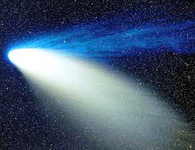
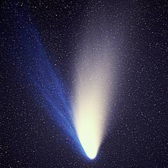
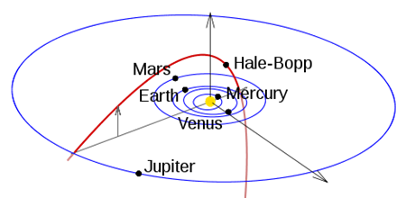

|
|
|  |
|
||||||||
根據最新的研究指出，1997年造成全世界轟動的世紀大彗星海爾波普(Hale-Bopp)是來自木星與海王星之間，而非太陽系的最外層－奧爾特雲(Oort Cloud)來的星體。科學家是利用紅外線望遠鏡(IRTF)觀察彗星所噴發出來的一氧化碳比例，才確定了這顆大型彗星的來源。 當1995年海爾波普彗星在木星距離被發現時，科學家就懷疑它是來自奧爾特雲，原因是它的體積很大，而且其軌道與黃道面有很大的傾角，但使用紫外線觀測彗星時，無法偵測到氖氣分子。這種懷疑終於在最近被推翻了，由紅外線觀測彗星所噴發的氣體顯示，每8個水分子(H2O)中只有1個一氣化碳(CO)，這種CO-to-H2O的比例與原生星雲不同(一氧化碳的比例應該更高)，證明了彗星的身份來源，是因為行星的重力擾動(gravitational perturbations)，使得原本在木星與海王星之間的某一個髒雪球突然轉向，衝向太陽，這與海爾波普被發現時的距離頗為吻合。 科學家推估，當海爾波普彗星來到距離太陽1AU時，每天所噴發的一氧化碳大約是5百50萬輛汽車每天的排放量的總和，可謂是太陽系的超級污染源。彗星一直被科學家所重視最大的原因在於，彗星內有太陽系形成過程的證據，在冰封的彗星核裏有著太陽系初生物質，若能解彗星的祕密，對於了解行星系統的形成是有幫助的，並且也可以了解生命的來源與彗星是否有關。

|
||||||||

網站製作人員：李佩芸、曾郁婷 更新日期：2010/9/02 |